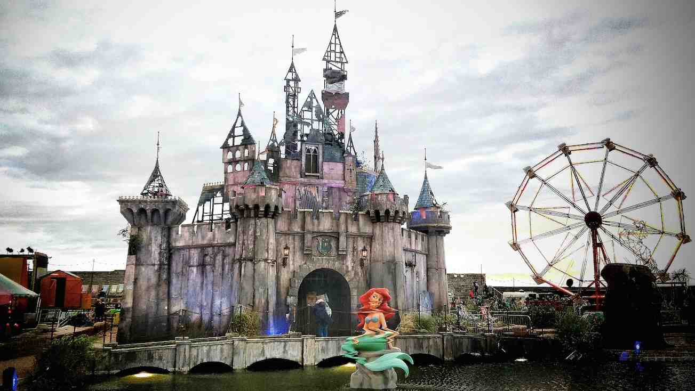

Reading #2: Site Specific Art
Q1. What are the differences between Site Specific art work and the idea of Art Interventions.
- Site Specific Art
- It is artwork that is designed to take up place in that area, to be in only a certain place.
- Could only exist in such circumstances and is not supposed to be moved or changed.
- Art intervention
- An interaction with an existing artwork that was made in the past
- It is meant to change the existing conditions, to be provocative, give a new meaning to the previous artwork in order to deliver a message or refer to a situation outside the art world
- Attempt to get people's attention to be aware of a condition that they might not know about, often about political or economical situations.
Q2. Choose 2 of the 4 artists shared and Answer the following for each artist.
A. Take one or more of the art works from the listed artists and please describe how a piece(s) function as site specific work or an intervention. Please provide context and examples to explain your answer.
B. For the same piece(s), explain your interpretation of the work. What does it mean to you?

I think this is a site specific because there are 400 polished stainless-steel poles that are specifically installed in this area of high desert of western New Mexico.
Due to its large scale and great amount of materials, this project can only exist in this location. And in terms of functionality, it can only work in such circumstances because it often rains on this field,
which will gather lightnings on the poles. It becomes a popular place for visitors who wants to experience and feel emerged in the enormous art installation in nature.

This is definitely an large scale art intervention. Banksy made a version of pessimistic Disneyland, which is completely the opposite to the purpose and standard of this happy miracle place. It reflects the real unfiltered world, showing the ugly, the corrupted sides of the society that is a not often talked about. Due to the use of recreating works that already exist based on a political and economical point of view, Banksy provokes viewers with ironnical messages in each of his artwork.
Q3. What is the single most important that all signs must share to be relevant and effective? This means ALL signs, from art signs to traffic signs, to signs even in our home. This is NOT about aesthetics or constuction, but just functionality of the idea.
My first answer is that they must be obvious in view, easy to find and to be unbendable in public, catching viewers' attention and create signal/ alert.
After the discussion in class, as Steve said the answer is "they must be considered as site specifics," I think it is reasonable. I agreed with that.
Q4. What Kind of art, (not shown here), have you seen that was made in response to its location, its environment, a specific event or situation. Please elaborate on its description and provide 1 image for reference.
tba